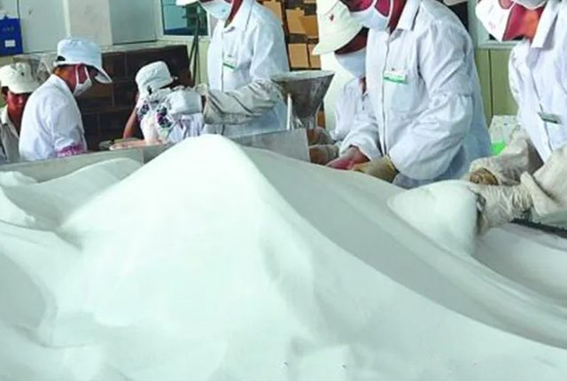
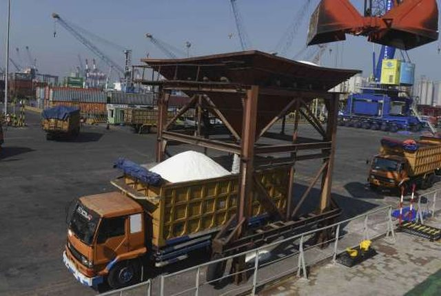

Monitor terpadu produksi–kebutuhan–impor, progres ekstensifikasi NTT, dan paritas biaya logistik terhadap garam impor. Swasembada bukan satu angka — ia tiga gerbang yang harus lolos bersamaan: volume, kualitas, dan harga.
3 Sep 2026. Panel bertanda ⬚ menunggu data resmi K/L — daftar lengkapnya ada di bagian akhir. Bukan publikasi resmi.Produksi 2025 anjlok 49% karena hujan (La Niña). Target 2026: 2,5 jt ton; kebutuhan 4,5–5 jt ton. Deadline Perpres 17/2025 (2027) menuntut konstruksi lahan ±20× lebih cepat dari run-rate saat ini.
Kebutuhan spek industri (NaCl ≥97%) ±3 jt ton/th; program produksi domestik yang memenuhi spek baru menargetkan 400 rb ton/th (±13%). Garam rakyat umumnya <94% NaCl. Uji coba K-SIGN Rote: 97% — proof point kritis.
CIF impor ±US$48/ton ≈ Rp750–800/kg sudah sampai pelabuhan Jawa. Harga tambak domestik saat panen Rp600–880/kg — ruang untuk seluruh biaya logistik NTT→Jawa nyaris nol. Paritas hanya tercapai lewat skala angkut + premium kualitas.
Produksi garam nasional adalah fungsi cuaca sebelum fungsi kebijakan: rentangnya 0,7–2,85 juta ton dalam tujuh tahun terakhir, sementara kebutuhan stabil naik menuju 5 juta ton. Ketergantungan impor bukan residu — ia struktural: rata-rata 2,6–2,8 juta ton per tahun apa pun kondisi panennya.
Produksi garam nasional terkonsentrasi di pesisir utara Jawa dan Madura. Tiga provinsi menyumbang 74% produksi nasional 2023 — inilah sebabnya satu musim hujan di Jawa mampu memangkas neraca nasional separuhnya, dan mengapa ekstensifikasi diarahkan keluar Jawa.
Ini instrumen monitoring paling tajam di dashboard: satu garis target, satu garis realisasi. Realisasi Jan–Mei 2026 untuk garam industri saja sudah 936 rb ton (+13,1% YoY). Disetahunkan sederhana ±2,25 jt ton — di atas lintasan target 2,0 jt, dan itu belum termasuk pos garam lainnya.
Swasembada gagal "di atas kertas" kalau volume terpenuhi tapi speknya tidak. Segmen terbesar — chlor alkali plant (CAP) untuk petrokimia dan pulp & kertas — menuntut NaCl ≥97%, impuritas rendah, dan pasokan kontinu. Garam rakyat umumnya di bawah 94%.

| Segmen | Kebutuhan (rb ton) | Spek NaCl | Status impor 2026 |
|---|---|---|---|
| CAP — petrokimia, pulp & kertas | ±2.400 | ≥97% | kuota 1,18 jt |
| Aneka pangan — mi, bumbu, snack | ±600 | ≥97% | tutup — keadaan tertentu |
| Pengasinan ikan | ±500 | krosok | domestik |
| Farmasi & kosmetik — infus, hemodialisa | ±10 | 99,9% | tutup — keadaan tertentu |
| Industri non-CAP lain | ±400 | variatif | domestik |
| Rumah tangga & komersial | ±1.000 | SNI beryodium | domestik |
Tiga lokasi ini adalah taruhan utama suplai baru. Monitoringnya sederhana: mengukur berapa hektare produktif bertambah tiap bulan, dan berapa yang dibutuhkan agar deadline masuk akal.
| Skenario deadline | Sisa waktu | Butuh (ha/bln) | vs run-rate ±31 |
|---|---|---|---|
| Perpres 17/2025 — swasembada 2027 | 16 bln | 634 | 20× |
| Glide path — nol impor 2029 | 40 bln | 254 | 8× |
Cek cepat: 616 ha × 200 t/ha = 123 rb ton/th pada kapasitas penuh — bandingkan gap impor 2,6–2,8 jt ton. Kawasan penuh 10.764 ha × 200 t/ha ≈ 2,15 jt ton — baru itu yang menutup gap CAP. Skala, bukan simbol.
Garam adalah komoditas nilai-rendah-per-kilogram (Rp600–900/kg di tambak) — sehingga toleransinya terhadap biaya angkut sangat tipis. Impor Australia tiba di pelabuhan Jawa dengan CIF ±US$48/ton (≈Rp750–800/kg) berkat kapal curah 30–50 rb DWT. Garam NTT harus menempuh 1.500 km dengan armada jauh lebih kecil — dan tetap harus mendarat lebih murah, atau setidaknya setara dengan premium kualitas.

| Instrumen | Isi relevan untuk garam |
|---|---|
| Perpres 17/2025 Percepatan Pembangunan Pergaraman Nasional | Mandat swasembada 2027; K-SIGN terintegrasi hulu–hilir; dasar hukum ekstensifikasi (Pasal 6). |
| Perpres 41/2026 Penguatan Logistik Nasional (diundangkan Jul 2026) | Mengganti Sislognas 2012. Tiga strategi: infrastruktur konektivitas & backbone, integrasi & digitalisasi (NLE), daya saing SDM. 24 program, 180 target keluaran, renaksi 2026–2029. Target biaya logistik 14,29% PDB → 12,5% (2029). Peluang: masukkan koridor garam NTT→Jawa + dermaga curah K-SIGN ke renaksi. |
| Perpres 126/2022 + Neraca Komoditas | Impor hanya CAP (kuota 2026: 1,18 jt ton); non-CAP via "keadaan tertentu". Kontrol verifikasi kini di Kemenko Pangan/KKP. |
| Kepmen KP 28/2025 | Penetapan lokasi K-SIGN Rote Ndao 2025–2026 (10.764 ha). |
Kalau dashboard ini dilembagakan, inilah instrumen panelnya — masing-masing dengan pemilik data dan frekuensi pembaruan.
Produksi 12 bulan berjalan ÷ kebutuhan tahunan. Posisi: 21%. Target: 100% (2029).
Produksi lolos uji NaCl ≥97% ÷ kebutuhan spek tinggi (±3 jt ton). Posisi: ±13% (target program, realisasi ⬚).
Realisasi kumulatif ÷ target pro-rata tahun berjalan. Posisi: >100% dari lintasan (warning).
Ha terbangun-berproduksi vs S-curve target. Posisi: 616 ha; butuh 254 ha/bln (jalur 2029) — 8× run-rate.
Panen riil per lokasi vs asumsi 200 t/ha. Pembuktian pertama: panen Rote Nov 2026.
Landed NTT ÷ landed impor di gerbang pabrik Jawa. Target ≤1,00. Posisi: ⬚ (butuh freight aktual).
Volume kontrak pembelian terikat ÷ proyeksi produksi. Tanpa ini, panen sukses = harga hancur. Posisi: ⬚.
Leading indicator produksi — prakiraan ENSO menentukan proyeksi 6 bulan ke depan. 2026: netral-kering, produksi membaik.
Setiap tanda ⬚ di dashboard ini adalah baris matriks aksi yang siap diisi (upaya–waktu–PIC): satu tugas data untuk tiap K/L pemilik datanya. Panel akan terisi otomatis begitu datanya tersedia.
| Data yang belum tersedia publik | PIC pemilik data | Dipakai untuk |
|---|---|---|
| Tarif freight curah aktual Tenau/Ba'a/Marapokot → Surabaya per ton, per ukuran kapal + frekuensi pelayaran | Dirut Pelni, Dirut Pelindo | KPI-6 paritas; kalkulator Seksi E |
| Spesifikasi dermaga (draft, panjang, alat muat curah) + rencana dermaga khusus K-SIGN | Direktur Kepelabuhanan Kemenhub | Penentu ukuran kapal maksimum = Rp/kg |
| Jadwal konstruksi & komitmen investasi 8.000 ha zona investor Rote | Kementerian Investasi/Hilirisasi, KKP | KPI-4 kurva lahan; skenario Seksi D |
| Hasil uji mutu (NaCl, Mg, Ca) per lokasi per panen | Kepala Balai Besar Produksi Garam KKP | KPI-2 gerbang kualitas |
| Volume & spesifikasi kebutuhan riil per industri anggota + komitmen kontrak offtake | Ketum AIPGI, Ketum APKI, Kemenperin | KPI-7 offtake coverage |
| Dekomposisi biaya tambak→gudang→pelabuhan di tiga kabupaten + kondisi jalan produksi | Dinas KP Prov. NTT, PT Garam, Cheetham, TLL, Tjakrawala | Rantai biaya ruas 1–2 |
| Realisasi impor bulanan seluruh pos HS 2501 (bukan hanya 25010093) + realisasi PI vs kuota | Kemenko Pangan, BPS, INSW | KPI-3 glide path presisi |
| Kapasitas & utilisasi gudang garam eksisting (GGR 100–200 t, GGN 2.000–7.000 t) per lokasi | KKP, Pemda | Buffer stok & stabilisasi harga petambak |